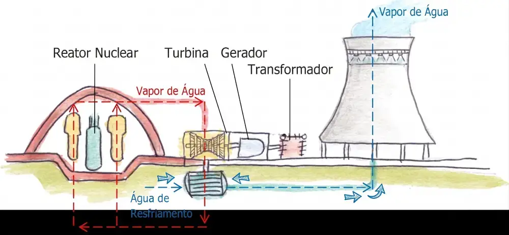
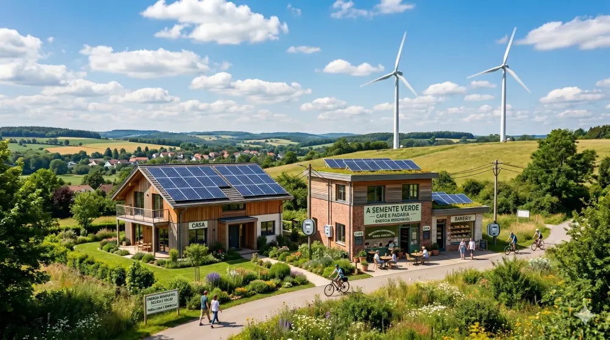
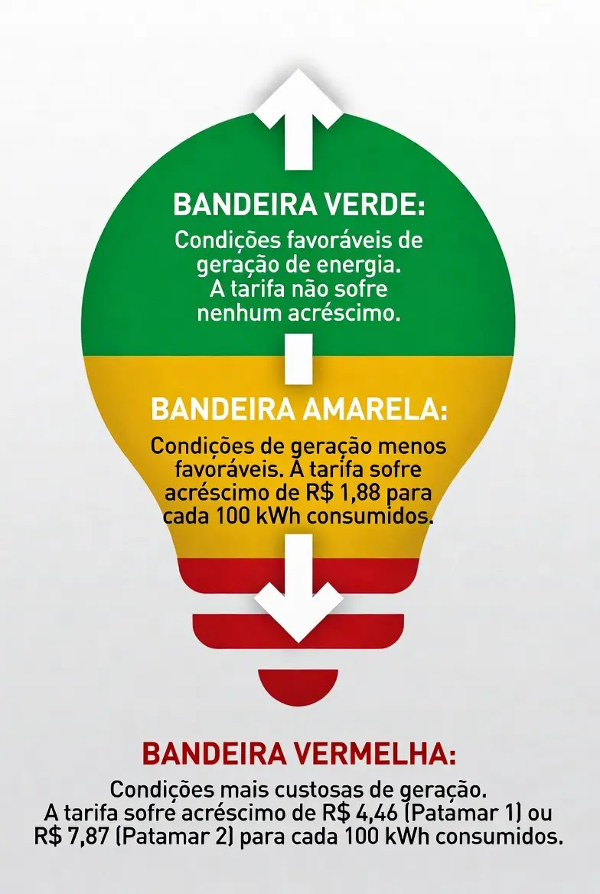

Guia Técnico Completo: Fontes de Energia Renovável para Sistemas Híbridos e Autonomia Residencial

Seja para garantir o funcionamento ininterrupto de eletrodomésticos básicos em nossas residências ou para movimentar complexas cadeias industriais, a energia é o motor invisível do desenvolvimento global. No cenário contemporâneo, marcado por pressões climáticas e reajustes constantes nas contas de luz, compreender a infraestrutura por trás da eletricidade que consumimos deixou de ser uma mera curiosidade acadêmica. Hoje, trata-se de uma necessidade estratégica para quem busca eficiência, blindagem financeira e sustentabilidade de longo prazo.
A busca por independência energética tem levado cada vez mais proprietários de residências e pequenas empresas a avaliarem as fontes de energia renovável para sistemas híbridos. Afinal, a energia que consumimos pode ser obtida a partir da transformação de uma ampla variedade de recursos naturais, os quais apresentam origens, disponibilidades e impactos ambientais profundamente distintos. Para organizar esse vasto panorama global e local, o mercado divide esses recursos em dois grandes grupos: as fontes não renováveis (ou convencionais) e as fontes renováveis (ou alternativas).
Neste guia técnico completo — estruturado com o rigor de um review aprofundado e a clareza de um redator especialista —, analisamos detalhadamente todo o ecossistema de geração, as tecnologias de armazenamento em baterias, os vetores de vanguarda e o impacto direto do cenário tarifário no seu bolso. Se o seu objetivo é entender como arquitetar um sistema resiliente, com excelente custo-benefício e preparado para o futuro, acompanhe esta análise definitiva.
1. O Panorama das Fontes de Energia Não Renováveis: A Base Convencional da Matriz Global
As fontes de energia não renováveis são aquelas cujos recursos disponíveis na natureza são finitos e esgotáveis. Isso ocorre porque o processo natural de reposição desses materiais é extremamente lento, demandando milhões de anos sob condições específicas e severas de temperatura, pressão e soterramento geológico. Consequentemente, quanto maior for o ritmo de extração e consumo dessas fontes, menor será o estoque total remanescente no planeta.
Apesar do apelo crescentemente focado em sustentabilidade e da expansão das tecnologias limpas, as fontes não renováveis — compostas principalmente pelo petróleo, carvão mineral, gás natural e energia nuclear — ainda constituem a base principal do suprimento e fornecimento de energia no mundo, sendo por isso chamadas de fontes convencionais.
1.1 Por que o Mundo Ainda Depende das Fontes Convencionais?
A hegemonia dessas fontes na matriz energética global não é por acaso. Ela se apoia em fatores técnicos, geopolíticos e econômicos consolidados ao longo do último século:
- Alto Rendimento Energético: Possuem uma elevada densidade de energia por unidade de massa ou volume, o que se traduz em alta eficiência termodinâmica durante o processo de transformação.
- Preços Atrativos na Origem: Devido à maturidade do mercado e de seus processos de extração em larga escala, o custo de produção inicial costuma ser altamente competitivo.
- Infraestrutura Consolidada: Existe uma gigantesca rede global de usinas, dutos, gasodutos, ferrovias, rodovias e portos projetada especificamente para o transporte, refino e distribuição desses insumos.
- Geração de Empregos e Renda: O setor de combustíveis fósseis e nuclear é um dos maiores empregadores mundiais, movimentando cadeias de suprimentos extremamente complexas.
1.2 Os Principais Usos no Dia a Dia e os Gargalos Ambientais
A aplicação dessas fontes se concentra em três pilares fundamentais: a geração de eletricidade em larga escala (despacho de base), o abastecimento de combustíveis para o sistema de transporte de cargas e passageiros, e o aquecimento térmico residencial e industrial.
No entanto, o uso extensivo de combustíveis fósseis (petróleo, carvão e gás) cobra um preço alto do meio ambiente. Por serem insumos combustíveis, eles precisam passar por processos de queima para liberar a energia armazenada em suas ligações químicas. Esse processo resulta na liberação maciça de gases de efeito estufa (GEE), como o dióxido de carbono CO₂, além de gases poluentes que deterioram a qualidade do ar, provocando impactos diretos na saúde pública e acelerando as mudanças climáticas globais.
Para mitigar o esgotamento precoce desses estoques e reduzir os danos ambientais, o setor energético mundial atua hoje em duas frentes: a exploração racional dos recursos existentes por meio do aumento da eficiência energética e o investimento massivo em ciência e tecnologia para o desenvolvimento de alternativas renováveis substitutas.
2. O Universo dos Combustíveis Fósseis: Petróleo, Gás Natural e Carvão Mineral
Os combustíveis fósseis são formados pelo depósito profundo de matéria orgânica — restos de plantas, algas e animais mortos — que permaneceu soterrada por centenas de milhões de anos sob condições físico-químicas muito específicas de alta pressão e temperatura.
 Processo geológico de formação e sedimentação dos hidrocarbonetos.
Processo geológico de formação e sedimentação dos hidrocarbonetos.
2.1 Petróleo e Gás Natural: Formação Geológica e Extração
Geologicamente, o petróleo e o gás natural ocorrem em formações denominadas bacias sedimentares. Essas áreas correspondem a porções da superfície terrestre ou do fundo do mar que, por serem mais baixas e planas que o relevo circundante, acumularam espessas camadas de fragmentos de rochas (sedimentos) e matéria orgânica ao longo das eras geológicas.
Ao contrário do que muitos imaginam, o petróleo não fica armazenado em grandes cavernas subterrâneas ou "lagos" líquidos. Ele fica retido em microporos (aberturas minúsculas) localizados no interior de rochas sedimentares porosas, conhecidas tecnicamente como rochas reservatórios. Atualmente, o ranking dos maiores produtores mundiais desses hidrocarbonetos inclui potências como os Estados Unidos, a Arábia Saudita, a Rússia e o Iraque. Em algumas regiões específicas do planeta, como no Canadá, o petróleo também pode ser encontrado misturado a areias betuminosas próximas à superfície, exigindo métodos diferenciados de mineração e refino.
2.1.1 A Indústria Petrolífera no Brasil e o Desafio Técnico do Pré-Sal
No cenário brasileiro, a produção de petróleo e gás natural ocorre de forma predominantemente marítima, com especial destaque para a região Sudeste. O grande divisor de águas da autonomia energética nacional foi a descoberta e exploração do horizonte geológico conhecido como Pré-sal.
O petróleo do Pré-sal representa um dos maiores desafios de engenharia do mundo. Os poços estão localizados a grandes profundidades marinhas, posicionados abaixo de uma extensa, instável e plástica camada de sal no subsolo do assoalho oceânico. A extração nesse ambiente exige sondas de perfuração de altíssima tecnologia, modelagem sísmica computadorizada e ligas metálicas especiais resistentes à corrosão e à extrema pressão hidrostática e litostática.
2.1.2 A Distinção Técnico: Exploração Onshore vs. Offshore
Dentro do jargão técnico da engenharia de energia, utilizam-se dois termos fundamentais para categorizar a localização geográfica e operacional das bacias sedimentares exploradas:
- Onshore: Refere-se às operações de exploração e produção realizadas em terra firme. Apresenta custos logísticos e operacionais comparativamente mais baixos.
- Offshore: Refere-se à exploração conduzida em bacias sedimentares marítimas, ou seja, em pleno mar. Exige o emprego de plataformas flutuantes complexas (FPSO, semi-submersíveis) e é onde se concentra o Pré-sal.
2.1.3 O Petróleo Além da Energia: Presença Invisível no Nosso Cotidiano
A importância do petróleo vai muito além do refino de gasolina e óleo diesel. Os derivados petroquímicos fazem parte da nossa rotina durante 24 horas por dia:
- Higiene e Saneamento: A escova de dentes e as tubulações residenciais de PVC dependem diretamente do refino de polímeros.
- Vestuário e Utilidades Domésticas: Fibras sintéticas em roupas (poliéster, nylon) e garrafas PET compartilham a mesma origem fóssil.
- Agregados no Agronegócio: Adubos sintéticos, fertilizantes e defensivos agrícolas essenciais utilizam formulações químicas baseadas em hidrocarbonetos.
- Materiais de Escritório e Descanso: Canetas esferográficas, colas plásticas e espumas de poliuretano expandido de colchões derivam do óleo bruto.
Nota de Responsabilidade Ambiental: Devido a essa onipresença e alta durabilidade, a reciclagem e reutilização contínua do plástico são cruciais para mitigar danos severos acumulados aos oceanos e à fauna global.
2.2 Carvão Mineral: Formação e Distribuição Geopolítica
O carvão mineral é uma rocha sedimentar combustível que se diferencia completamente do carvão vegetal (obtido pela carbonização de lenha). Ele é encontrado em depósitos subterrâneos chamados jazidas, originadas a partir do soterramento e fossilização de antigas florestas e pântanos que existiram há mais de 200 milhões de anos.
 Ciclo completo de transformação geológica da matéria vegetal em carvão mineral.
Ciclo completo de transformação geológica da matéria vegetal em carvão mineral.
As maiores jazidas mundiais concentram-se nos Estados Unidos, Rússia e China. No Brasil, concentram-se no Rio Grande do Sul e Santa Catarina. Embora o carvão nacional possua menor poder calorífico e maior teor de enxofre, ele desempenha um papel estratégico na segurança de suprimento elétrico da região Sul por meio de usinas termelétricas de base.
2.3 Rotas de Conversão e Riscos Ambientais Associados
Para liberar a energia armazenada nos combustíveis fósseis, eles passam por caldeiras, turbinas a vapor ou motores de combustão. Nas usinas termelétricas, a queima aquece a água, cujo vapor aciona uma turbina conectada ao gerador. No mercado residencial brasileiro, o gás natural cumpre ainda o papel de fonte térmica direta em fogões e aquecedores de água por passagem.
A operação dessa cadeia fóssil impõe severos riscos socioambientais:
- Emissões Atmosféricas: Geração de óxidos de enxofre (SOx), nitrogênio (NOx), material particulado e o temido CO₂.
- Vazamentos e Contaminações: Falhas em navios petroleiros ou falhas estruturais em dutos logísticos provocam desastres ambientais massivos nos ecossistemas fluviais e marítimos.
- Impactos da Mineração: A lavagem de rejeitos lixivia metais pesados e compostos ácidos para os leitos dos rios, destruindo ecossistemas aquáticos.
- Saúde Ocupacional: Ambientes insalubres sujeitos a poeiras tóxicas e explosões demandam gerenciamento de riscos cirúrgico.
3. Energia Nuclear: A Alta Tecnologia da Fissão Atômica
A energia nuclear representa uma vertente bastante distinta dentro das fontes não renováveis, completamente desvinculada da queima de combustíveis fósseis. Ela é o calor liberado a partir de reações físicas controladas que alteram a estrutura interna do núcleo de átomos caracterizados como radioativos e instáveis.

Fluxo termodinâmico de uma usina nuclear: circuito primário, secundário e geração de eletricidade.3.1 O Processo Técnico da Fissão Nuclear e o Papel do Urânio
O princípio operacional baseia-se na fissão nuclear, que consiste na divisão controlada de um núcleo pesado (Urânio-235) em núcleos menores, liberando uma quantidade colossal de energia térmica e nêutrons que sustentam uma reação em cadeia. O urânio bruto precisa passar por mineração, purificação e concentração gasosa, etapa altamente tecnológica denominada enriquecimento de urânio.
3.2 Engenharia de uma Usina Nuclear: Da Física à Eletricidade
O reator nuclear substitui a caldeira de fósseis. A energia da fissão aquece a água sob altíssima pressão em um circuito primário. Esta transfere o calor para um circuito secundário através de um trocador de calor, gerando vapor de alta pressão que impacta e rotaciona as turbinas acopladas a geradores elétricos. Por não realizar queima química, o processo operacional é considerado uma fonte limpa sob a ótica de emissão atmosférica direta.
3.3 Gerenciamento de Rejeitos, Segurança Operacional e o Cenário no Brasil
Apesar das vantagens, a engenharia nuclear enfrenta dois grandes gargalos:
- Destinação dos Rejeitos Radioativos: O material exaurido (lixo nuclear) emite radiação perigosa por milênios e precisa ser encapsulado em estruturas multicamadas e armazenado em depósitos geológicos de alta segurança.
- Segurança contra Acidentes: Embora eventos históricos como Chernobyl e Fukushima gerem discussões, as usinas modernas usam sistemas de proteção passiva robustos que minimizam riscos a patamares ínfimos.
No Brasil, a infraestrutura centraliza-se em Angra dos Reis (RJ). O país conta com Angra 1 e Angra 2 em operação comercial e Angra 3 em construção sob a batuta da Eletronuclear, aproveitando o fato de o território nacional deter uma das maiores reservas de minério de urânio do mundo.
4. O Bloco de Geração Coletiva e Conceitos: A Engenharia dos Sistemas Híbridos
Quando passamos do modelo centralizado para o ambiente residencial e comercial de pequeno porte, a engenharia foca na descentralização. Descubra em profundidade as nuances de dimensionamento em nossa seção dedicada à Geração Fotovoltaica, o pilar mais acessível desse ecossistema.

4.1 Como Funciona um Sistema de Energia Híbrida Residencial?
Um sistema híbrido combina duas ou mais fontes (renováveis variáveis com uma fonte de backup ou com a própria rede da concessionária) atuando em perfeita sintonia através de um gerenciamento eletrônico centralizado. O coração e cérebro desse ecossistema é o Inversor Híbrido. Ele gerencia o fluxo em tempo real:
[ Painéis Solares ] ───► [ Inversor ] ◄─── [ Aerogerador ]
Híbrido
│ ▲
▼ │
[ Banco de Baterias Estacionárias ]
│
▼
[ Cargas da Residência ]
- Prioridade de Autoconsumo: Durante o dia, a energia das fontes locais atende diretamente à demanda da casa.
- Armazenamento Inteligente: Excedentes de geração carregam o banco de baterias em vez de serem desperdiçados.
- Suporte Automático: À noite ou em calmaria climática, o sistema drena as baterias. Se atingirem o limite seguro, o inversor comuta de forma imperceptível para a rede elétrica convencional.
4.2 Geração de Energia Fotovoltaica Residencial: O Pilar Solar
A tecnologia solar é o componente principal por sua excelente modularidade. Células de silício cristalino purificado absorvem os fótons da radiação solar, transferindo energia para os elétrons do semicondutor e gerando corrente contínua (CC). O inversor híbrido converte essa energia em corrente alternada (CA) em 127V ou 220V, permitindo o uso imediato ou armazenamento estratégico.
4.3 Energia Eólica de Pequena Escala ou Micro Eólica Residencial: O Complemento Noturno
A micro eólica residencial atua como o complemento perfeito à solar, pois gera energia nos períodos noturnos e em dias de tempestade. Consiste na aplicação de pequenos aerogeradores (de algumas centenas de watts a 10 kW). Para entender detalhadamente as configurações mecânicas indicadas para zonas urbanas, veja nosso compilado técnico sobre Micro Aerogeradores de Alta Performance.
4.3.1 Aerogeradores de Eixo Horizontal vs. Eixo Vertical
É crucial entender as duas principais geometrias de rotores para o seu projeto híbrido:
- Aerogeradores de Eixo Horizontal (HAWT): Alta eficiência aerodinâmica em ventos lineares e constantes, necessitando de uma cauda ou leme de direcionamento.
- Aerogeradores de Eixo Vertical (VAWT): Modelos omnidirecionais (como Savonius ou Darrieus) que captam ventos de qualquer direção sem sistemas de guinada. Operam silenciosamente e são perfeitos para lidar com ventos turbulentos de cidades.
Pronto para iniciar seu Sistema Híbrido Econômico?
Compre componentes de alta eficiência testados e homologados diretamente no Mercado Livre, com frete rápido e a máxima segurança do mercado.
Ver Equipamentos Homologados no Mercado Livre →5. O Bloco de Armazenamento e Baterias: A Chave da Autonomia Energética
O armazenamento é o tanque de combustível que garante a resiliência operacional do sistema híbrido, evitando o desperdício dos excedentes de geração.
5.1 O Papel Crítico do Banco de Baterias Estacionárias
Diferente dos modelos automotivos, as baterias estacionárias possuem placas espessas projetadas para ciclos profundos de descarga sem degradação acelerada de sua capacidade em Ah ou kWh. Atuam como amortecedores de carga, estabilizando flutuações geradas por nuvens passageiras ou rajadas de vento inconstantes.
5.2 O Ecossistema do Armazenamento de Energia Solar Residencial
Projetos eficientes de armazenamento de energia solar residencial monitoram de perto a eficiência de ida e volta (Round-Trip Efficiency) e o gerenciamento térmico das células. O calor excessivo acelera falhas eletroquímicas internas, sendo obrigatória a instalação das baterias em ambientes secos, protegidos do sol e altamente ventilados.
5.3 O Embate Tecnológico: Baterias LiFePO4 vs. Chumbo-Ácido
Analisemos as características técnicas estruturais que dividem esses dois pilares de armazenamento:
5.3.1 Baterias de Chumbo-Ácido (Ventiladas e VRLA Gel/AGM)
Utilizam tecnologia centenária com placas imersas em ácido sulfúrico. Suas versões VRLA (Gel e AGM) evitam a necessidade de manutenção constante de reposição de água destilada.
- Vantagens: Baixíssimo custo nominal de aquisição inicial por bloco e reciclagem industrial madura no país.
- Desvantagens Técnicas: Profundidade de Descarga (DoD) limitada a apenas 50%. Descargas mais profundas provocam sulfatação severa precoce e inutilizam o banco de baterias em poucos meses. São extremamente pesadas, volumosas e dissipam muita energia por efeito Joule.
5.3.2 Baterias de Ferro-Fosfato de Lítio (LiFePO4)
A tecnologia de Ferro-Fosfato de Lítio (LiFePO4) consolidou-se como o padrão ouro de armazenamento estacionário devido à sua extrema segurança e estabilidade térmica.
- Vantagens Técnicas: Suportam profundidades de descarga brutais de 80% a 90% (até 100% em emergências). Enquanto o chumbo-ácido entrega de 500 a 800 ciclos a 50% DoD, o lítio LiFePO4 supera facilmente 6.000 ciclos a 80% DoD (mais de 15 anos de operação diária ininterrupta). Ocupam 1/3 do espaço, suportam cargas rápidas e possuem eficiência global superior a 95%.
- Desvantagens: Custo inicial nominal mais elevado e dependência eletrônica do circuito BMS (Battery Management System) para balanceamento celular.
5.4 Analisando o Custo-Benefício de Baterias Estacionárias: O Custo por Ciclo
A decisão de investimento financeiro inteligente deve ser baseada no Custo por Quilowatt-hora por Ciclo ($Custo/kWh/Ciclo$).
Considere o seguinte review de mercado prático: se um banco de baterias de chumbo-ácido custa R$ 5.000,00 e fornece 500 ciclos operacionais a 50%, o custo real por ciclo é de R$ 10,00. Um banco de lítio LiFePO4 equivalente custa R$ 15.000,00 (o triplo do valor de etiqueta), mas entrega 6.000 ciclos úteis. Dividindo o aporte pelo número de ciclos reais, o custo por ciclo do sistema de lítio cai para apenas R$ 2,50.
Conclusão técnica: A bateria de lítio LiFePO4 mostra-se quatro vezes mais barata a longo prazo em sistemas de uso contínuo, eliminando trocas recorrentes do banco de chumbo a cada dois anos.
6. O Bloco de Vetores de Vanguarda e Análise Tarifária: Inteligência Financeira
A viabilidade econômica dos projetos está intrinsecamente ligada ao modelo regulatório das contas de consumo e às novas fronteiras tecnológicas de estocagem em escala macro.

Funcionamento dinâmico do sistema de bandeiras tarifárias da ANEEL.6.1 Sistema de Bandeiras Tarifárias e o Custo-Benefício da Autonomia
O consumidor brasileiro convive mensalmente com as flutuações aplicadas pela ANEEL. Quando chove abundantemente, operamos na bandeira verde (custo elétrico baixo). Em secas prolongadas, o ONS aciona termelétricas fósseis de backup (óleo diesel e gás natural), elevando drasticamente a conta através das bandeiras amarela e vermelha (Patamares 1 e 2).
O sistema híbrido mitiga essa oscilação permitindo a Arbitragem de Carga: o inversor inteligente pode carregar as baterias pela rede na tarifa mais barata ou priorizar o sol diurno, descarregando o banco de lítio para abastecer a residência exatamente no horário de pico (tarifa de ponta) ou durante vigência de bandeiras tarifárias vermelhas inflacionadas, gerando economias brutais no fluxo de caixa mensal.
6.2 Hidrogênio Verde como Vetor Energético: O Futuro do Armazenamento de Longo Prazo
Enquanto as baterias gerenciam ciclos curtos diários, o mercado global se posiciona no hidrogênio verde como vetor energético para armazenamento sazonal de longa duração. Como o gás H₂ não ocorre de forma pura livre, ele precisa ser isolado. O hidrogênio tradicional (cinza) provém da queima de gás natural com altos índices de poluição; o azul capta esse CO₂ e o armazena geologicamente (CCUS).
Por outro lado, o Hidrogênio Verde (H2V) é gerado via eletrólise da água usando eletrolisadores alimentados obrigatoriamente por fontes 100% limpas (solar e eólica de larga escala). Funciona como um combustível químico renovável estável, que pode ser comprimido, armazenado por meses sem perdas por autodescarga e posteriormente convertido de volta em eletricidade e água através de Células a Combustível (Fuel Cells) com emissão zero de carbono.
[ Eletricidade Renovável ] ──► [ Eletrolisador ] ──► [ Hidrogênio Verde ] ──► Armazenamento em Alta Pressão
( Solar ou Eólica ) ▲
│
[ Água ]
7. Análise Técnica e Comparativo Avançado de Fontes e Tecnologias
Confira o comparativo estruturado para guiar a escolha dos componentes essenciais de sua infraestrutura:
| Fonte ou Tecnologia | Tipo de Recurso | Eficiência Média | Vida Útil Estimada | Vantagens Técnicas | Desafios de Projeto | Aplicação Recomendada |
|---|---|---|---|---|---|---|
| Geração Solar Fotovoltaica | Renovável Variável | 18% a 22% (Painel) | 25 a 30 anos (Módulos) | Alta modularidade, sem partes móveis, baixíssima manutenção. | Geração estritamente diurna, dependência de área de telhado. | Base de captação para sistemas híbridos residenciais e comerciais. |
| Microeólica Residencial | Renovável Variável | 30% a 45% (Limite de Betz) | 15 a 20 anos | Geração complementar noturna, alta densidade de potência. | Dependência de ventos constantes, sensibilidade a turbulências urbanas. | Propriedades rurais, regiões litorâneas e suporte noturno à solar. |
| Baterias Chumbo-Ácido VRLA | Armazenamento Eletroquímico | 75% a 85% | 3 a 5 anos (300-500 ciclos a 50% DoD) | Baixo custo nominal inicial, reciclagem amplamente consolidada. | Peso elevado, baixa densidade, limitação severa de descarga. | Sistemas off-grid de baixo orçamento ou backup residencial esporádico. |
| Baterias de Lítio LiFePO4 | Armazenamento Eletroquímico | 95% a 98% | 15 a 20 anos (+6.000 ciclos a 80% DoD) | Densidade energética extrema, suporta descargas profundas, segura. | Custo de aquisição inicial elevado, dependência de placa BMS. | Padrão ouro para armazenamento de energia solar e arbitragem tarifária. |
| Hidrogênio Verde (H2V) | Vetor Energético de Longo Prazo | 40% a 50% (Ciclo Completo) | Variável (Depende do Eletrolisador) | Densidade por massa absurda, estocagem por meses sem perdas. | Custo tecnológico elevado, complexidade de compressão e tanques. | Armazenamento sazonal de grande escala e frotas de transporte pesado. |
| Usinas Hidrelétricas | Renovável Despachável | 85% a 95% (Alta Eficiência) | Acima de 50 anos | Fornecimento estável de base (SIN), custo competitivo por MWh. | Sazonalidade hidrológica (secas), grandes impactos em alagamentos. | Matriz centralizada nacional e suporte de carga pesada do grid. |
| Energia Nuclear | Não Renovável Convencional | 33% a 37% (Térmica-Elétrica) | 40 a 60 anos | Emissão zero de GEE, altíssima confiabilidade independente do clima. | Custo de construção bilionário, gerenciamento de rejeitos radioativos. | Geração de base ininterrupta para grandes centros urbanos. |
8. Conclusão: O Futuro Pertence à Descentralização e Resiliência Energética
Ao final de um review técnico aprofundado sobre todo o ecossistema que move o setor elétrico, fica evidente que o antigo modelo de fornecimento de energia — puramente centralizado e totalmente dependente de combustíveis fósseis ou da sorte climática — está cedendo espaço para uma realidade inevitável: a era da Geração Distribuída e dos Sistemas Híbridos Inteligentes.
Para o consumidor residencial, o pequeno comerciante e o produtor rural, a adoção de fontes de energia renovável para sistemas híbridos representa uma transformação de status: de um mero pagador de faturas passivo e exposto aos solavancos do sistema de bandeiras tarifárias para um agente ativo, um prosumidor capaz de gerar, gerenciar e estocar a sua própria eletricidade limpa. Para gerenciar essa carga de forma precisa em residências, confira nossa análise de equipamentos de Armazenamento Estacionário de Vanguarda.
A engenharia moderna nos mostra que o sucesso não reside na busca por uma fonte de energia "perfeita", mas sim na harmonia da complementaridade. Associar a constância previsível da geração de energia fotovoltaica residencial com a força complementar da micro eólica, ancorando toda essa energia no desempenho extraordinário e duradouro de um banco de baterias de lítio LiFePO4, é a fórmula definitiva para alcançar a máxima eficiência, robustez financeira e uma autonomia energética inabalável preparada para as próximas décadas.
Compre Baterias LiFePO4 de Longa Duração com Segurança
Encontre células e bancos estacionários completos de lítio Ferro-Fosfato com BMS integrado no Mercado Livre. Invista no sistema que dura mais de 15 anos.
Ver Preços de Baterias LiFePO4 no Mercado Livre →